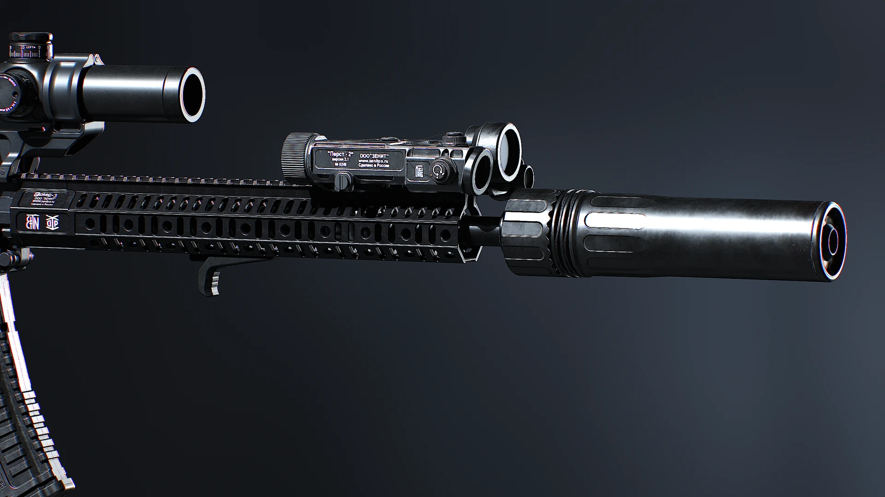

AAA Hard-surface
AR-платформа

Замысел проекта
В основе каждого компонента — реальный серийный образец. Я изучил изделия разных производителей и продумал компоновку как правдоподобную конфигурацию, которую выбрал бы и для реальной сборки.
Каждый элемент моделировал с нуля по реальному образцу и вёл как отдельный ассет. За основу пайплайна взял подходы опытных художников по оружию из Activision, работавших над Call of Duty.
Пайплайн
CAD-моделирование
Построил high-poly и mid-poly в Fusion 360. Затем доработал high-poly в ZBrush: добавил фаски, сколы, царапины и другие следы механических повреждений.
Low-poly и UV
Для low-poly выполнил ретопологию в 3ds Max, затем подготовил UV-развёртку в RizomUV.
Запекание
Запекал карты в Marmoset Toolbag. Этот этап занял особенно много времени: проверял результат на каждом стыке, исправлял артефакты и повторял запекание.
Текстуры и финальные рендеры
Текстурировал ассет в Substance 3D Painter. Финальные кадры отрендерил в Marmoset Toolbag.
Mid-poly после Fusion 360

Оптика

«Перст», второе поколение
Воссоздал второе поколение «Перста» по фотографиям. Когда я начал работу, среди доступных 3D-моделей находил только предыдущие версии. После публикации рендеров меня просили выложить модель для скачивания или продать её.


Магазин


Глушитель и детали корпуса


УСМ
Топология и UV


Финальный рендер
